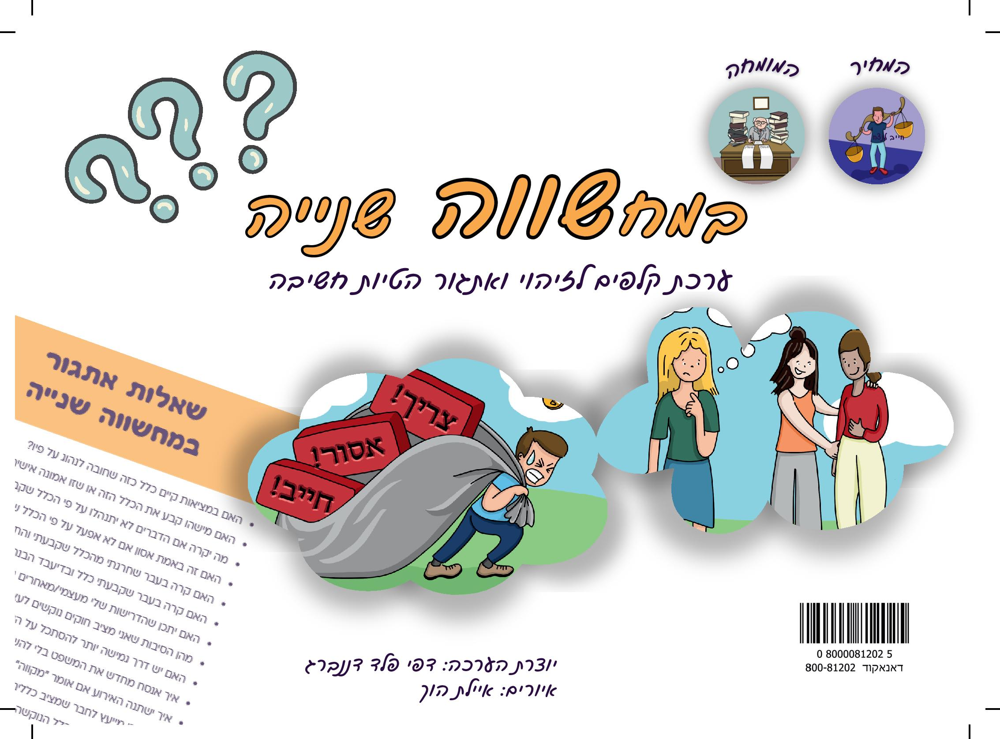

כלי טיפולי חווייתי ויעיל לשינוי דפוסי חשיבה שליליים אצל מתבגרים, צעירים ומבוגרים
 הזמינו עכשיואנשי טיפול -
האם אתם זקוקים לכלי חווייתי, מדויק ויעיל שיסייע לפונים שלכם לזהות ולאתגר דפוסי חשיבה שליליים, ויעורר תובנות ותהליך שינוי משמעותי?האם אתה נוטה להיקלע למצבים של תקשורת קשה, אי הבנות ועימותים בינאישיים?
האם אתה חווה רגשות שליליים ותחושות אכזבה ותסכול בשכיחות גבוהה?
האם אתה נוטה להסיק מסקנות ולקבל החלטות על סמך מחשבות ופרשנויות שבדיעבד מתבררות כשגויות?
ערכת הקלפים במחשווה שנייה היא כלי חווייתי ומדויק לזיהוי ואתגור הטיות חשיבה ולפיתוח חשיבה גמישה ומאוזנת.
הטיות חשיבה הן דפוסים מחשבתיים שגורמים לאדם לפרש אירועים בחייו באופן שגוי, להתייחס לפרשנות שלו כאל אמת יחידה ומוחלטת ולראות את המציאות בצורה מוטה ומסולפת.
במילים פשוטות - המוח מספר לנו סיפור שהוא לא תמיד נכון ואנו מאמינים לו
הטיות החשיבה גורמות למעגל שלילי של תקיעות רגשית והתנהגותית ולפגיעה בתחומי החיים השונים: מערכות יחסים, קבלת החלטות, פתרון בעיות ועוד .
מאתגרים את המחשבות השליליות ופותחים פתח לשינוי
בערכת הקלפים מאגר שאלות אתגור ממוקדות ומדויקות לכל הטיית חשיבה.
באמצעות שאלות האתגור, האדם לומד להציב סימן שאלה על המחשבות האוטומטיות שלו, לעצור ולשאול:
אולי יש דרך אחרת לחשוב על האירוע?
שאלות האתגור מאפשרות להתבונן לעומק על דרך החשיבה, לשחרר דפוסי חשיבה שליליים ולאמץ התנהגות מאוזנת ורציונלית יותר.
העבודה עם הקלפים חווייתית נטולת ביקורת, מאפשרת פתיחות, שיתוף ושיח בגובה העיניים.
שאלות האתגור הממוקדות מאפשרות התערבות טיפולית שמקדמת באופן משמעותי התבוננות פנימית ופיתוח גמישות מחשבתית.
השימוש ברצף שאלות האתגור והשהייה בכל שלב יוצרים תנועה פנימית משמעותית ותובנות עמוקות בטיפול.
קלף "המחיר" וקלף "" מסייעים לזהות באופן לא מאיים את המחירים של דפוסי החשיבה, מגבירים מוטיבציה לשינוי ומחזקים בחירת תגובות מאוזנות ורציונליות יותר.
האיורים ההומוריסטים משקפים את האבסורד שבהטיית החשיבה ומהווים כלי עוצמתי לתובנה ולתהליך שינוי.
השימוש בקלפים גמיש ומגוון ומתאים לשלבים שונים של הטיפול.
כלי נהדר לעבודה קבוצתית, זוגית והורית, מזמין ומאפשר לדבר על דפוסי חשיבה תוך שיקוף הדדי.
מטפלת קוגניטיבית התנהגותית (CBT)
עבדה כ - 27 שנים במחלקה לשירותים חברתיים בשירות הציבורי, בטיפול בנוער וצעירים ובטיפול בגישת "אייכה - הקשר המגדל" הכולל טיפול פרטני וקבוצתי להורים והנחיית צוותי חינוך וייעוץ. בעלת קליניקה פרטית לטיפול בגישת CBT ולטיפול בהורות.
כותבת הספר "דבק" לטיפול בהפרעה טורדנית כפייתית (OCD)
אצל ילדים ובני נוער.
ערכת הקלפים במחשווה שנייה – כלי ייחודי שמקדם תובנות עמוקות בטיפול ומניע שינוי פנימי משמעותי בתהליך של פיתוח חשיבה גמישה ומאוזנת.
+ 30 שקלים משלוח עד הבית
+ 30 ₪
ממשמר דוד
תשלום מאובטח | הזמנה מהירה ופשוטה